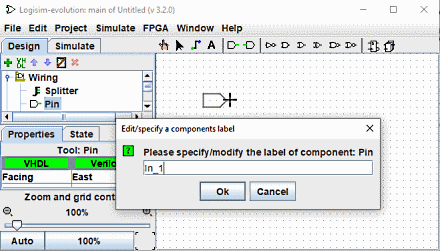

תוויות עם מספר עצמי
אפשרות זו מאפשרת לך למקם רכיבים עם תוויות ממוספרות עצמית למשל Led_1, Led_2... . להשתמש בזה, בצע את הפעולות הבאות :
בחר כלי בחלונית הניווט, למשל סיכה, והעבר אותו אל
את משטח העבודה ולפני לחיצה כדי לשחרר אותו הקש על מקש L.
הזן שם תווית המסתיים במספר, למשל. "In_1".

מעתה ואילך כאשר אתה משחרר רכיבים מסוג זה, הם יסווגו אוטומטית בתוספת. כאשר
האפשרות מופעלת, הצל של הרכיבים לפני המיקום שלהם נצבע בוורוד.
ניתן להפעיל אפשרות זו עבור רכיבים שונים בו זמנית.

כדי לבטל את ההפעלה, המשך באותו אופן כמו להפעלה, אך השתמש במקש A. אם יש לך תיוג עצמי מופעל על רכיבים מסוג אחר. עליך לבטל אותו בנפרד עבור כל אחד סוג רכיב.
מקשים ופונקציות נלוות
L : מפעיל את הפונקציה והגדר/שנה תווית
T : החלף את נראות התווית
H : הגדר את נראות התווית ל-false (הסתר)
V : הגדר את נראות התווית ל-true (show)
A : מסיים את פונקציית התווית הממוספרת העצמית
סוויטה: הצבת רכיבים במטריצה.